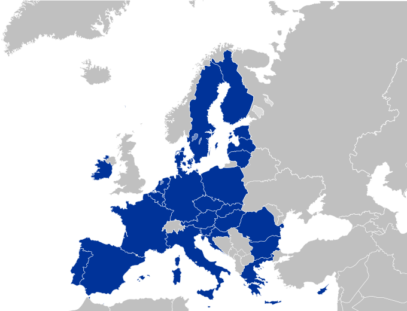

Uniunea Europeană
Uniunea Europeană (UE) este o uniune politică și economică a 27 de state membre situate în principal în Europa. Are o suprafață de 4.233.262 km2 și o populație estimată de aproximativ 447 milioane. UE a dezvoltat o piață unică internă printr-un sistem standardizat de legi care se aplică în toate statele membre. Politicile UE vizează asigurarea liberei circulații a persoanelor, bunurilor, serviciilor și capitalurilor în cadrul pieței interne, adoptarea legislației în domeniul justiției și afacerilor interne și menținerea unor politici comune privind comerțul, agricultura pescuitul și dezvoltarea regională. Pentru călătoriile în spațiul Schengen, controlul pașapoartelor a fost eliminat. O uniune monetară a fost înființată în 1999, a intrat în vigoare în 2002 și este compusă din 19 state membre ale UE care utilizează moneda euro.
Cetățenia UE și cea europeană au fost înființate odată cu intrarea în vigoare a Tratatului de la Maastricht în 1993. Uniunea Europeană își are originea în Comunitatea Europeană a Cărbunelui și Oțelului (CECO) și în Comunitatea Economică Europeană (CEE), înființate în 1951 prin Tratatul de la Paris, respectiv în 1957 prin Tratatul de la Roma. Membrii inițiali ai Comunității Europene au fost: Belgia, Franța, Italia, Luxemburg, Olanda și Germania de Vest. În anii următori Comunitatea s-a lărgit prin aderarea unor noi state membre și și-a crescut puterea prin adăugarea de domenii economice, sociale și politice în competența sa. Tratatul de la Maastricht a înființat Uniunea Europeană sub prezenta denumire în 1993. Cea mai recentă modificare majoră a bazei constituționale a UE, Tratatul de la Lisabona, a intrat în vigoare la 1 decembrie 2009. Regatul Unit a semnalat intenția de a părăsi Uniunea în urma unui referendum din iunie 2016. Astfel, pe 31 ianuarie 2020 Regatul Unit a părăsit definitiv Uniunea Europeană.
Acoperind 7,3% din populația lumii[12] UE a generat în 2017 un produs intern brut nominal (PIB) de 19.670 miliarde de dolari SUA, reprezentând aproximativ 24,6% din PIB nominal global[13] și 16,5% măsurată în termeni de paritate a puterii de cumpărare.[14] În plus, toate cele 27 de țări ale UE au indicele dezvoltării umane foarte ridicat conform Programul Națiunilor Unite pentru Dezvoltare. În 2012, UE a primit Premiul Nobel pentru Pace.[15] Prin politica externă și de securitate comună, UE a dezvoltat un rol în relațiile externe și apărare.[16] Uniunea întreține misiuni diplomatice permanente în întreaga lume și este reprezentată în cadrul Națiunile Unite, Organizația Mondială a Comerțului, G7 și G20. Datorită influenței sale globale, Uniunea Europeană a fost descrisă ca o superputere emergentă.
Uniunea Europeană
{kind=link}
- Capitală
Bruxelles (de facto)
- Cel mai mare oraș
Paris
- State membre
27 state
- Guvernare
Supranațional
- Alfabete oficiale
Latin Grec Chirilic